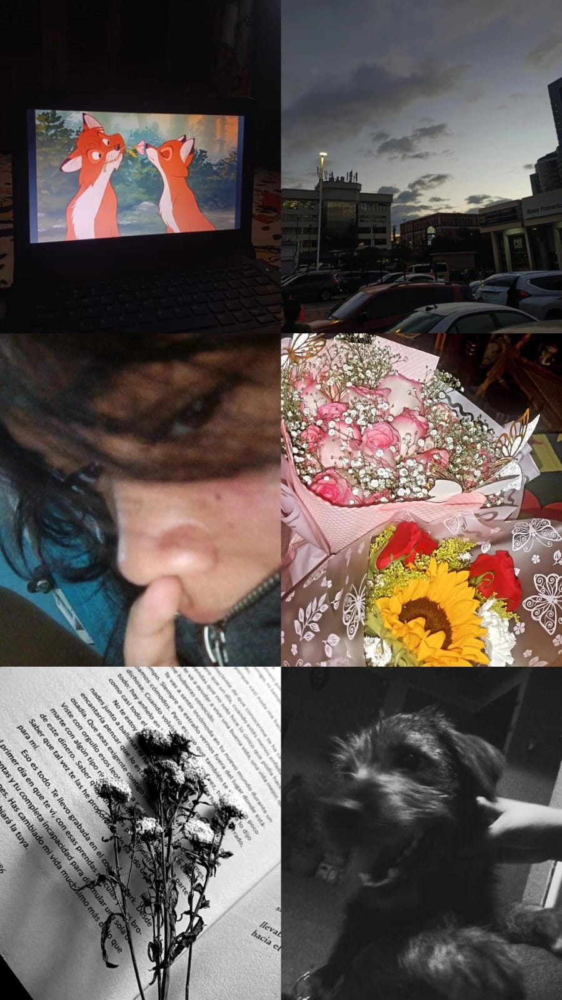
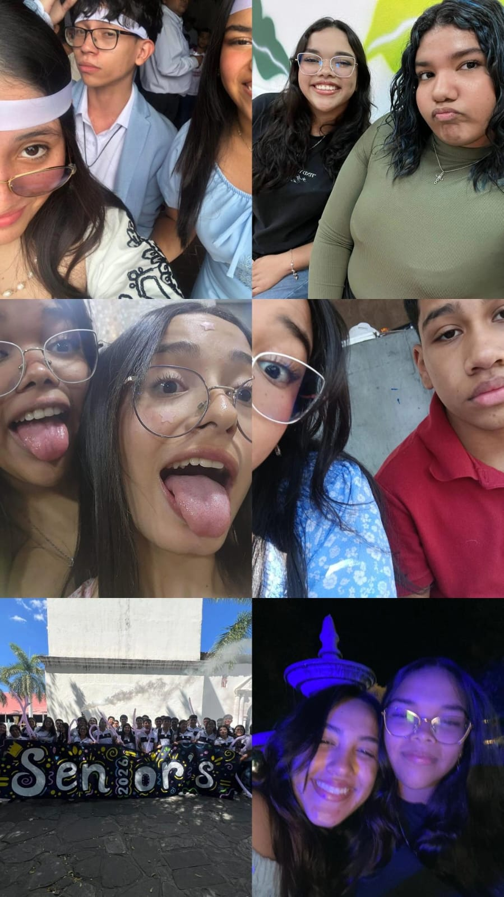
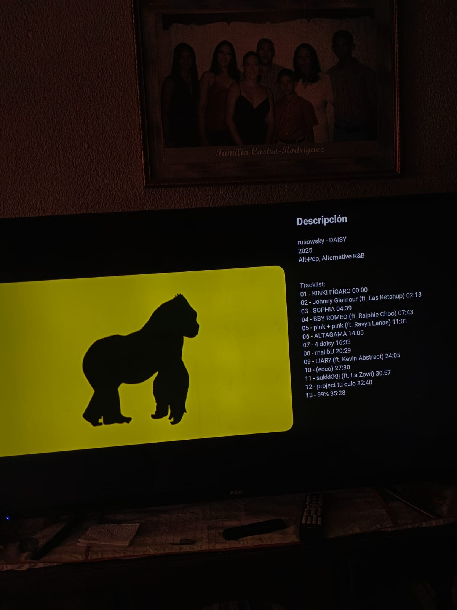

PORTAFOLIO DOLLY POSASEstudiante de 12 BTP Informática |
||
|---|---|---|
| Sobre mí | Hobbies | Contacto |
|

En mi tiempo libre disfruto realizar diferentes actividades que me ayudan a relajarme y desarrollar nuevas habilidades. Uno de mis hobbies favoritos es la toma de fotografías y videos, ya que me permite ser creativo y crear cosas nuevas desde cero. Me gusta investigar, practicar y mejorar cada día. |

Además, me gusta pasar tiempo con mis amigos y familia, ya que considero que compartir momentos con las personas que quiero es muy importante. Estos hobbies forman parte de mi crecimiento personal y me motivan a seguir mejorando. |

También disfruto escuchar música, porque me ayuda a concentrarme y a desconectarme del estrés. En algunos momentos me gusta ver series o videos educativos que me permitan aprender algo nuevo. |